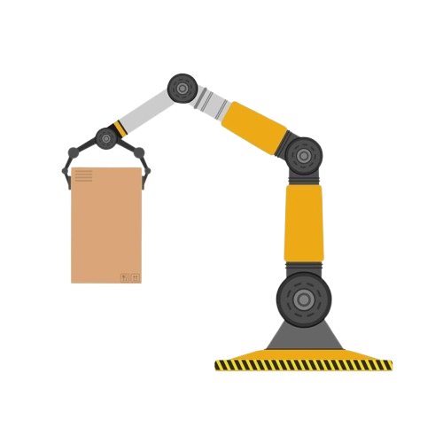
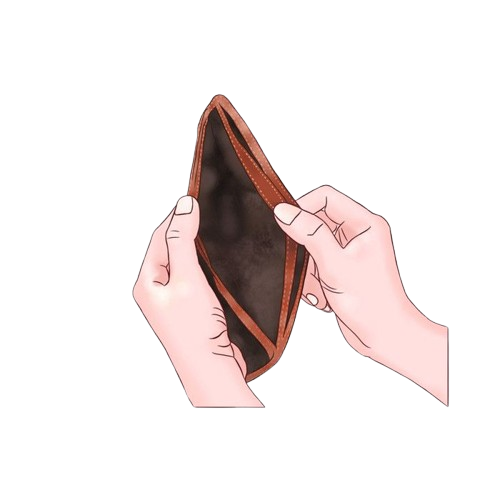
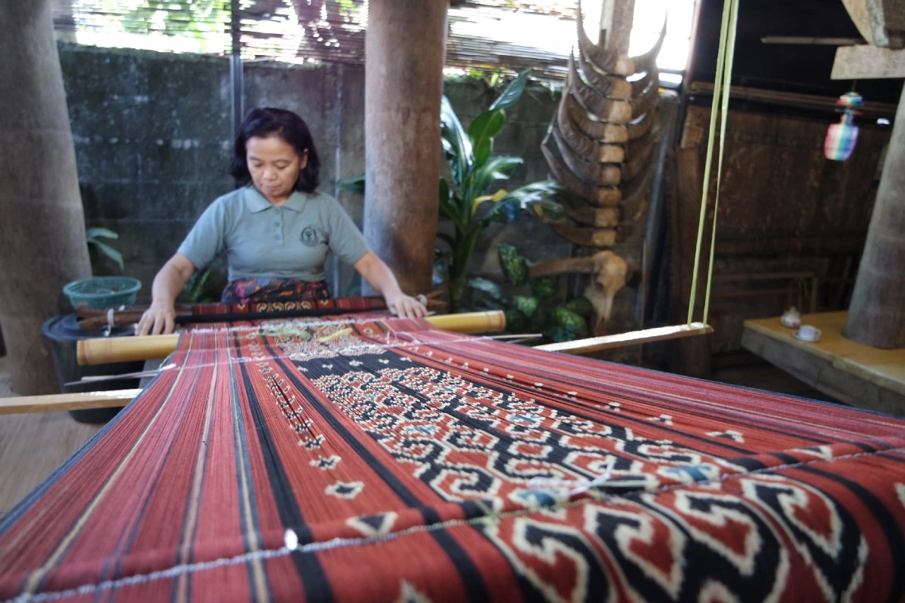
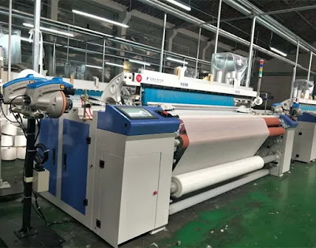
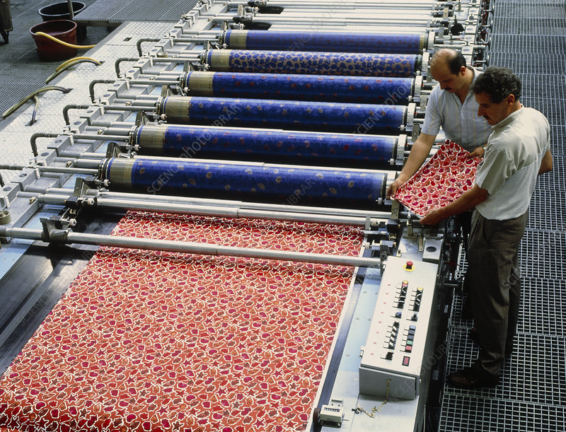

The Impact Of Technology
On Traditional Industries
This is a collab project for web programming. X English with analytical text material.
Paragraph 1
In my opinion, technology has greatly changed traditional industries. It brings many benefits, but it also creates new problems. The issue affects workers, production, and business competition.

Paragraph 2
Firstly, technology increases efficiency and saves time. Machines are used to do difficult tasks faster. As a result, production is improved, and companies can earn more profit.
Paragraph 3
Secondly, technology helps small industries reach more customers through the internet. Products can be promoted and sold online easily. Therefore, business growth becomes faster.

Paragraph 4
However, many workers are replaced by machines. Some people lose their jobs, and traditional skills are forgotten. In addition, not everyone can afford modern technology.
Paragraph 5
To conclude, I believe technology gives both positive and negative effects on traditional industries. It makes work easier and markets wider, but it also causes job loss. So, technology should be used wisely for a better future.
Positive and Negative Impact
Work becomes faster and more efficient
Easier promotion and wider markets
Better product quality
Job loss due to automation
Traditional skills are forgotten
High cost of modern tools
Gallery
Comparison between traditional and modern methods.

traditional weaving

modern weaving machine

batik printing
plowing the fields in the traditional way
plowing the fields in a modern way
traditional market